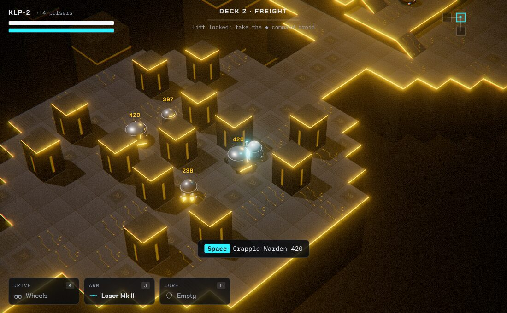
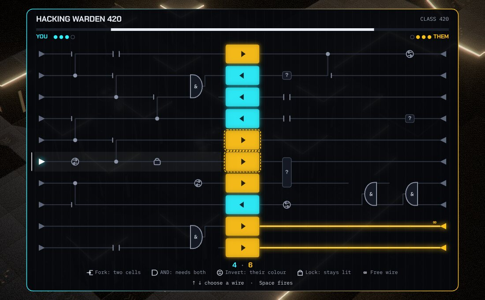

A small droid in a tower full of bigger ones. It can't win a fair fight, so it steals.

What it is
KLEPTO is a remake, of sorts, of Quazatron, which Steve Turner wrote for the ZX Spectrum and Hewson published in 1986. It was itself a Spectrum take on Andrew Braybrook's Paradroid. In both you play a weak droid that can latch on to other droids, beat them in a circuit-board duel and take something from them. In Quazatron that something was their parts.
I wanted to keep that idea, the isometric platforms and the duel, and build a deeper game around them. The droid you play is still called KLP-2, which is where the name comes from.
How a run works
Five decks and then the Mainframe. Each deck is stitched together from hand-made rooms, so the layout changes every run but every room was designed.
KLP-2 starts with wheels and a bumper. It has three sockets, for a drive, an arm and a core, and there are nine parts to steal: thrusters, hover, treads, a laser, an arc coil, a tractor beam, a shield, a cloak and a phase core.
Every droid is built from the parts it carries, and it fights with them. What you see on a droid is what you can take from it. A part's grade comes from the class number of the droid you took it from.
Some rooms are sealed vaults that need a particular part: thrusters for a gap, treads for a heavy crate, phase for a force field. The way down never needs one, so a run can't jam.
Each deck's lift is locked until you take its command droid, by hack or by force.
When KLP-2 is destroyed the run ends. The droid archive stays, and any part you have ever stolen can come with you, at grade I, on the next run.
The hack

Grapple a droid and you're dropped into its circuits. Two sides of a board fight over a column of cells in the middle. You pick the side whose wires look better, then fire pulses down them. A powered cell turns your colour. Own more cells when the timer runs out and the droid is yours.
The wires carry parts that change the sums: forks that reach two cells, AND gates that need two pulses at once, inverts that paint your opponent's colour, locks that stay lit, and the odd free wire. Damage a droid before you grapple it and it fights back with fewer pulsers. Stun it and it starts late. Grapple it from a cloak and you ambush it.
The colours
Quazatron on the Spectrum was mostly one colour on black, because the machine could only manage two colours in any 8 by 8 block of pixels. KLEPTO borrows that idea rather than the look. Each deck takes one ink from the Spectrum's palette as its hostile colour. KLP-2 is always cyan. As you hack and wreck the deck's machines, its light drifts from the hostile colour to cyan, so you can see how much of it you've claimed.
There is also a 1986 mode in the settings, which draws the game the way the Spectrum would have had to: 192 lines, black paper and one bright ink in each 8 by 8 block. Where KLP-2's cyan meets a magenta wall, one of them has to give. That's attribute clash.
How it's made
I don't write code. I described what I wanted to Claude, Anthropic's AI model, working in Claude Code, and it did the typing, the testing and a good deal of the design. My part was the brief, the decisions and the fussing.
It's built with three.js in plain JavaScript, with no build step. It runs as static files.
There are no image files in the game. Floors, walls and displays are drawn on canvases when it loads; droids are put together from simple shapes.
Every sound is made in the browser with the Web Audio API, including a small score for each deck that gets busier when you're in a fight.
The fonts are Chakra Petch and IBM Plex, both under the Open Font License, served from this site.
It's desktop only, played with a keyboard or a gamepad. The movement and the timed hack both want quick, precise input, and touch controls would have been a poor copy. A controller paired to a phone will work.
The menus are real buttons, so they work by keyboard, gamepad and screen reader, and the game announces what happens. It follows your system's reduced motion setting, and there are options to take less damage and slow the hack timer. The action itself still needs sight and quick hands, and I won't pretend otherwise.
Your settings, the archive and your records are kept in your browser and go nowhere else.
Diary
Newest first.
Milestone
First playable run
The first version that goes from the title screen to the Mainframe and back. Five decks plus the finale, fifteen families of droid, nine parts, firmware upgrades, vaults, an archive that lasts between runs, and the hack.
The hack got the most attention, since it's the heart of the thing. The original's boards were fun but opaque, so this one shows you which cells a wire will reach before you fire, and each cell carries a small arrow pointing at its owner so the board still reads without colour. A headless test pits a decent player against droids of every class: the cheap ones lose more than eight times in ten, the officers on deck 5 still win about three times in ten.
Before calling it playable, Claude wrote a bot that plays whole runs with no graphics, at speed. It found that about one deck in eleven had a lift you couldn't reach, and that KLP-2 rolled off edges far too easily. Both are fixed. Every change now gets checked against 1,800 generated decks, and KLP-2 won't drive itself off a ledge, though a ram can still put it over.
Droids came out better than I expected: little enamel domes with a lit visor and their class number on the front, like the originals, but carrying whatever they've got bolted on. A Courier has thrusters on its back. A Warden has shield fins. You learn what a part does by being on the wrong end of it first.
The brief, and three decisions
I asked for Quazatron, much improved: the isometric movement and the grappling kept, the rest made deeper and better looking, with powers you take from the machines you hack and puzzles that need the right ones.
A roguelite. Halfway through the brief it struck me that this could be a roguelite, and it fits unusually well, because the game was always about starting weak and stealing your way up. The risk with procedural levels is a puzzle you can't solve with what you've got, so the puzzles moved into optional vaults, and the generator makes sure the part that opens each vault is walking around somewhere on the same deck.
Desktop only. I worried it wouldn't work on a phone, and it doesn't really. Better to say so plainly than ship a cramped virtual joystick.
KLEPTO.Quazatron is still someone else's name, so this one is named after its hero.
Credits
Quazatron by Steve Turner, Graftgold, published by Hewson, 1986. Paradroid by Andrew Braybrook, Graftgold, published by Hewson, 1985. KLEPTO borrows their ideas, not their code or graphics, with thanks.
Made with three.js. Fonts: Chakra Petch by Cadson Demak, IBM Plex by IBM.